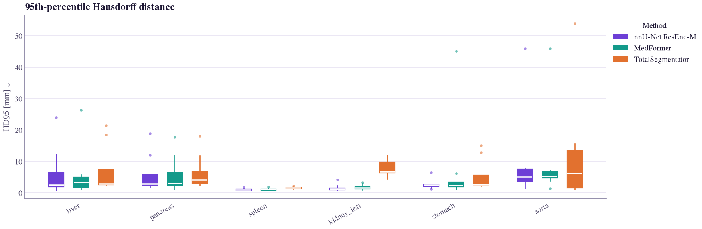
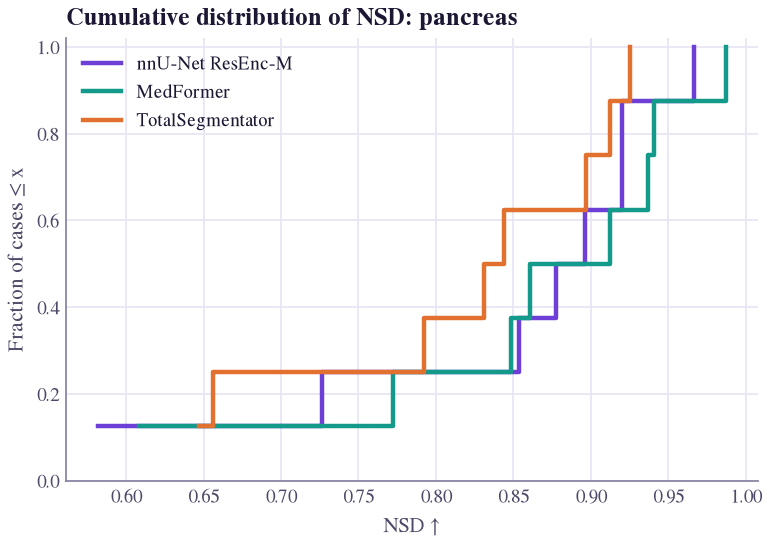
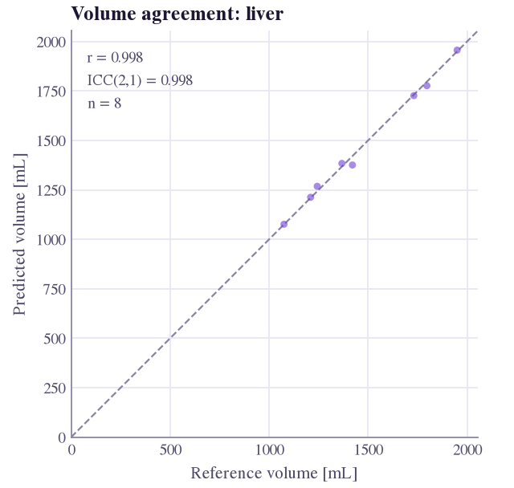
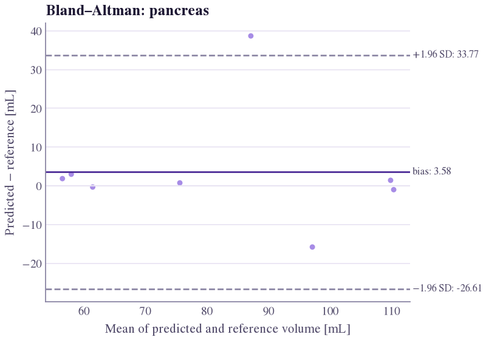
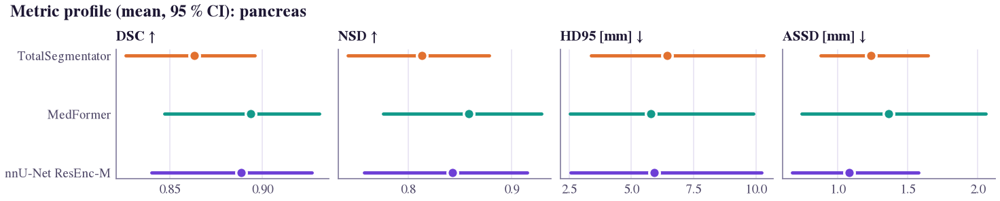
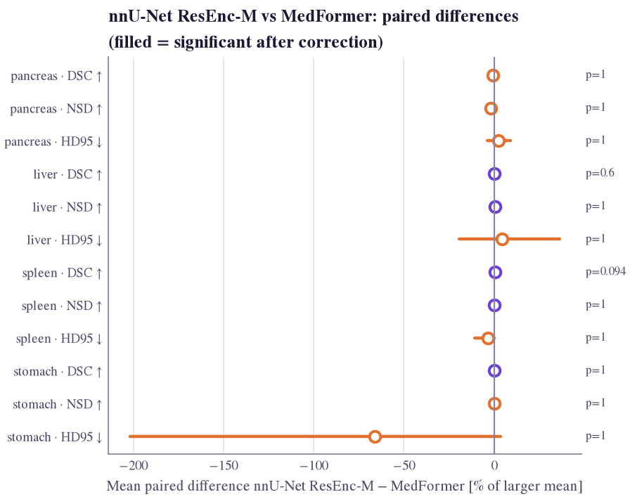

Quantitative plots#
segevalkit.plotting turns results into publication-ready figures. Every function takes one
EvaluationResult or a mapping {method: EvaluationResult}, labels axes with unit and better direction
(e.g. HD95 [mm] ↓), keeps each method's colour fixed across figures (purple theme),
and returns a matplotlib Figure (or draws on ax=).
from segevalkit import plotting as P
import segevalkit as sek
res = sek.load_results("eval_nnunet/")
fig = P.metric_distribution(res, "dice")
fig.savefig("dice.pdf") # vector for papers
fig.savefig("dice.png", dpi=200) # raster for slides
Which plot answers which question?#
| Question | Function | Notes |
|---|---|---|
| How are per-case values distributed? | metric_distribution |
raincloud (default), box, violin or strip |
| Does one method dominate across the distribution? | ecdf |
tails visible, unlike a bar of means |
| Which cases fail, on which structures? | metric_heatmap |
worst cases first |
| Is the metric biased by structure size? | metric_vs_size |
log-volume axis, binned median |
| Which metrics are redundant? | metric_correlation |
Spearman across cases |
| Is the volume right? | volume_agreement, bland_altman_plot |
identity plot with ICC; bias and limits |
| How do methods compare on several metrics? | metric_profile |
small multiples with bootstrap CIs |
| Is A significantly better than B? | comparison_forest |
paired differences from stats.compare |
| How stable is the ranking? | ranking_stability_plot |
bootstrap blob plot |
| Are probabilities calibrated? | reliability_diagram |
top-label reliability with gap |
| Are small lesions found? | detection_by_size |
detection rate per size bin |
| How many false positives does a sensitivity cost? | froc_plot |
FROC with the CPM score |
| Does the model flag the right patients? | roc_plot |
patient ROC, plain and localized, with a bootstrap band |
| How precise are the detections? | pr_plot |
lesion- or patient-level PR with AP |
| What kind of failure is it? | failure_quadrants |
Dice vs HD95, flagged cases |
| What does each metric respond to? | sensitivity_curves |
segevalkit.synthetic studies |
Real outputs
Every figure below was drawn by the function it illustrates, from three official models (nnU-Net ResEnc-M, MedFormer, TotalSegmentator) on 8 PanTS test CTs: 2 large, 2 medium and 2 small tumours, 2 tumour-free. Eight cases illustrate the library; they are not a benchmark. The pancreas is scored as pancreas ∪ lesion (why).
Distributions#
P.metric_distribution(res, "dice", labels=["liver", "pancreas", "pancreatic_lesion"])
P.metric_distribution({"nnU-Net": r1, "MedFormer": r2}, "nsd", kind="box")
P.ecdf({"nnU-Net": r1, "MedFormer": r2}, "dice", label="pancreas")
The raincloud shows shape (half-violin), median and IQR (box) and every case (points). In an ECDF, the curve further right dominates for higher-is-better metrics.

kind="box": one aorta outlier near 425 mm per model dwarfs every other value.



Per-case heatmap#
Rows are cases (worst first), columns structures: a dark row is a case failure, a dark column a structure failure.

Size dependence#
P.metric_vs_size(res, "dice", label="pancreatic_lesion")
P.metric_vs_size({"A": r1, "B": r2}, "nsd", label="pancreatic_lesion")
Reference volume on a log axis with a binned median. Dice and IoU drop on small structures even for constant-thickness boundary errors (pitfalls).

Metric redundancy#
metrics = ["dice", "iou", "nsd", "hd95", "assd", "masd", "precision", "recall"]
P.metric_correlation(res, metrics, label="pancreas")
Dice and IoU are monotone transforms of each other (ρ = 1), so report one. Weakly correlated metrics capture different failure modes.

Volume agreement#
P.volume_agreement(res, "liver") # predicted vs reference, r and ICC(2,1)
P.bland_altman_plot(res, "liver") # bias and 95 % limits of agreement, mL
P.bland_altman_plot(res, "liver", relative=True) # differences as % of the mean




Comparing methods#
from segevalkit.stats import compare
P.metric_profile({"nnU-Net": r1, "MedFormer": r2, "TotalSegmentator": r3},
["dice", "nsd", "hd95", "assd"], label="pancreas")
P.comparison_forest(compare(r1, r2, metrics=["dice", "nsd", "hd95"]),
name_a="nnU-Net", name_b="MedFormer")
The profile keeps each metric on its own axis and direction (radar charts cannot). The forest plot normalises differences by the larger mean so units share one axis; filled markers are significant after correction, with the adjusted p-value beside each row.




Ranking stability#
from segevalkit.stats import ranking_stability
stab = ranking_stability({"nnU-Net": r1, "MedFormer": r2, "TotalSegmentator": r3}, "dice",
label="pancreas", n_boot=1000)
P.ranking_stability_plot(stab)
Blob area is the fraction of bootstrap samples giving a method that rank; the orange bar is the full-data rank and the line the 95 % rank interval. The title gives the median Kendall τ (Wiesenfarth et al. 2021).

Calibration#
Bars show accuracy per confidence bin; the shaded part is the gap to confidence. For 3D volumes pass voxels from a
band around the structure (ECE, roi="band"), or background dominates.

Lesion detection#
P.detection_by_size({"nnU-Net": r1, "MedFormer": r2}, label="pancreatic_lesion",
bins_ml=(0, 0.1, 0.5, 1, 5, 20, float("inf")))
Uses the per-lesion table (res.lesions) from the detection metrics. Each bar is the detected fraction of
reference lesions in a size bin, with the lesion count printed in the bar.

Detection curves#
P.froc_plot(res, "pancreatic_lesion") # lesion sensitivity vs FP lesions per scan, CPM
P.roc_plot(res, "pancreatic_lesion", localized=True, # patient level; dashed: flagged lesion must
reference_point={"sensitivity": 0.76, # overlap a reference lesion
"specificity": 0.91, "label": "reported"})
P.pr_plot(res, "pancreatic_lesion", level="lesion") # or level="patient"
These need per-lesion confidence scores, which the lesion table holds when detection metrics run (maximum
probability inside each predicted lesion with a probability source, else its volume); see
FROC and CPM. Pass {name: result} to overlay several models.


Failure modes#
Good Dice with large HD95 means distant false-positive fragments; poor Dice with small HD95 means boundary shift or under-segmentation. Flagged case ids can be inspected with the qualitative views.

Sensitivity curves#
from segevalkit import synthetic
df = synthetic.sensitivity_study([("case", ref_mask, spacing)],
["dice", "nsd", "hd95", "cldice"],
perturbations={"erode": [0, 1, 2, 3], "cut": [0, 2, 4]})
P.sensitivity_curves(df, ["dice", "nsd", "hd95", "cldice"])
One panel per perturbation: median metric vs magnitude, IQR shaded.

Styling your own figures#
import matplotlib.pyplot as plt
from segevalkit.plotting import theme, CATEGORICAL
with theme(): # SegEvalKit rcParams, scoped
fig, ax = plt.subplots()
ax.plot(x, y, color=CATEGORICAL[0])
apply_theme() sets the theme globally. Figures use a Times-style serif (STIX) that matches LaTeX papers.